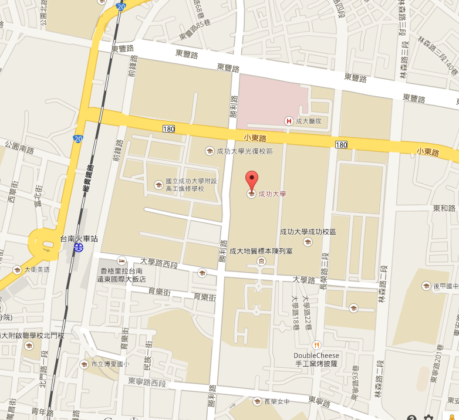

06/16 投影片釋出
EDiT 的所有議程投影片已釋出！請至議程頁面查看。
05/24 國立成功大學 繁城講堂
05/24 正式登場！
我們是一群主要由成大資工的學生與系友組成的 EDIT 工作團隊，EDIT 的全名為 Enlightenment Day of Information Technology，我們稱之為「科技啓蒙」。顧名思義，我們計劃以資訊科技作為主題，舉辦一整天的活動，企圖以這樣的活動，為成大資工創造一個更有想法與活力的環境，也為同學們帶來一些不一樣的啟發。
這個活動，形式為整天的演講與交流，議題的主軸圍繞在各種資訊科技相關的議題，諸如各種新興程式語言、軟體開發、軟硬體整合、網頁相關技術、多媒體、資訊科技在生活中的應用，或是自由軟體文化等各種跟資訊科技有關係的議題等等。我們旨在將被動學習轉化主動分享，同學可以投稿發表、或選擇作為聽眾，在活動中盡情討論彼此有興趣的題材。我們希冀透過這樣的活動，激發出同學心中潛藏已久的求知慾。也利用這樣的舞台，進一步為整個大環境帶來更多活力。
我們相信，有很多珍貴的學習心得與研究成果埋藏在每位同學的身上，這些知識都非常值得被分享，然而現在的教育氛圍，並不特別鼓勵學生積極主動的進行分享與討論，這是相當可惜的事！在這種被動的學習環境中，往往只有極少數人會主動走出人群，站在舞台上針對主題進行演講、發表心得。而其他人身上同樣珍貴的經驗心得，就在不知不覺中被埋沒了！
胡適先生曾經說過：「發表是最好的記憶」。身為成大資工的學生，我們想從這個地方開始發起，提供同學們一個「發表」的舞台，同時也讓同學們接觸彼此的所知所學，藉以激盪出更多不同的火花。
時間 |
流程 |
|---|---|
| 09:00 ~ 09:10 |
Opening小畢 (CrBoy) |
| 09:10 ~ 09:45 |
自己的繪圖機自己作這次的主題是使用 2 台光碟機加上 MSP430，製作一台高精度的繪圖機，並使用 Inkscape 繪圖，生成 G-Code 來控制他。一切的材料都是生活用品與垃圾，利用現成的機構省去麻煩的機械問題。 詳細說明：浪打 (Lambda) |
| 09:50 ~ 10:25 |
自己的 OS 自己灌！ArchLinux！簡單，自由，輕量化！請選用 ArchLinux！ 出發總要有個方向！走，我們灌 ArchLinux ！ 李組長眉頭一皺，竟然沒發現 Arch 並不單純… 超高自由度，超華麗養成，超級輕量化。 帶你『養』出自己的作業系統！ 因為很重要，所以要說兩次！ 簡單，自由，輕量化！請選用 ArchLinux！ 詳細說明：Omar |
| 10:30 ~ 11:05 |
成熟且易撰寫的程式語言: Tcl/TkTcl 為一種容易撰寫的腳本式語言，和 Ruby 與 Python 類似，同時可以以互動式的 shell 來執行，或是寫成一個檔案去編譯。 Tk 為 Tcl 提供了 GUI，例如按鈕、工作列等等。 而 Tclkit 能讓 Tcl application 不去依靠 Tcl envriroment 就能夠執行。 希望能夠讓大家感受到 Tcl/Tk 的簡潔和強大。 詳細說明：nickbanana (紀孟辰) |
| 11:20 ~ 11:55 |
當資訊科技撞上臺南牛肉湯的那些事兒臺南乃牛肉湯之都，而我們的使命，就是喝過所有的牛肉湯，並且推薦給廣大網友。 牛肉湯更是一個不斷成長的產業，舊的店持續帶給人幸福，新的店漸漸露出，需要一個完整動態的報導與比較，我們最痛恨人家把牛肉湯當作牛肉麵，只因牛肉湯和牛肉麵天南地北，我們希望臺南牛肉湯能和臺北牛肉麵有著世界級的認可，親自走訪台南每一家牛肉湯，嘗試運用部落格、社群網路、iOS/Android App 等科技推廣牛肉湯，只因臺南是如此美好的地方，而牛肉湯又是如此令人難以忘懷，一起來征服牛肉湯吧！ 詳細說明：BSTN |
| 11:55 ~ 13:10 |
午休 |
| 13:10 ~ 13:45 |
Tip for Editors 給新手的測試入門課Tip - Testing (in Python) Editors - 參與科技啓蒙的朋友們 「測試」在軟體開發當中扮演異常重要的角色，然而，這方面的知識與思考在大多數的學校教育當中是欠缺的。講者將以 Python 為例，結合自身的開發經驗，與聽眾一起探討測試這一個 big issue。 參考資料：Joe |
| 13:50 ~ 14:25 |
高中生與嵌入式 - 打造四軸飛行器作為高中生，我希望可以簡單敘述我這半年來左右如何透過大學資源向老師、大學生、研究生學習。同時我也將說明四軸飛行器的基本原理，並介紹一些軟體上面開發的歷程。 自高一開始，我深受肯。羅賓森爵士對於教育看法的影響，事實上，現存中學體制已經逐漸不敷使用，這是一個社會應該重新思考教育的時機。 深受開放思潮 (open source、hardware、data...) 影響的我，選擇走出校園，向世界學習。 至於四軸飛行器方面，這是一個相當具有挑戰性的題目，打造一台飛行器，需要進行的是系統整合，整合數學、物理、電機、資訊... 我將說明四軸的基本原理以及去年的課程中，我的夥伴們和我是如何一步步的將其建造出來。 詳細說明：聖文 (鄭聖文) |
| 14:40 ~ 15:15 |
做遊戲，從 SDL 開始介紹 SDL (Simple DirectMedia Layer) 這套開發套件庫，簡介 SDL 基本的能力，能夠做到的事情，並以一個小程式作爲示範，讓大家知道寫遊戲不一定要從 OpenGL/DirectX 開始入門。同時，能夠寫程式和寫遊戲並重，既不會太偏重程式也不會偏重遊戲。 詳細說明：KK (梁穎睿) |
| 15:20 ~ 15:55 |
LuSer-自製 Server 引擎自己在寫小工具時，常常會想加上需要連線的小功能。網路上找到的 Server 引擎，有時候會大才小用。LuSer 是一個簡單、輕巧的伺服器引擎，它的目標只為了專注在「傳遞訊息」這件事，省下許多未必會用到的功能，也讓它更容易被擴充使用。這個程式的定位，是用在講求程式碼輕盈、簡約的小型程式，以及製作大型伺服引擎時的雛型，或是用來偵錯。 由於是使用 C 語言製作，效率上不會太差。未來會讓他更容易擴充、開發跨平台版本，也設計更多週邊的程式。 詳細說明：LuSer 這個名字是結合我的英文名字 "Lu"is 和 "Ser"ver 的字首。取名時沒想太多，不過後來發現念起來很像魯蛇。反正我也還是個光棍魯蛇，所以中文名就是「魯蛇」程式分成 2 個部份，LuMain 是主要的部份，負責傳遞和廣播訊息。LuAuth 則是負責登入時檢查帳號密碼。 這兩個部份和客戶端，三者之間用一個使用者自訂的密碼做 Xor 加密，過濾掉不屬於這個程式的連線訊息。另外還有 2 個使用者自訂的密碼：管理員指令的密碼，以及 LuMain 和 LuAuth 之間溝通用的特殊密碼，用這 3 個密碼做最基本的防護。未來可能會使用更安全的加密法，所以程式設計時也保留擴充性。 Port 使用 5000~5002，Winsock2 的 UDP 協定。用 UDP 是因為一開始只是要作為聯機遊戲的網路核心，後來才變成通用的網路引擎。在這方面當然也宣告成 macro，保留修改的空間為了 debug 方便，在 source 裡也附上一些小工具，還有一個簡單的聊天室-LuChat，可供大家使用。 徐朝逸 |
| 16:05 ~ 16:40 |
程式設計 (二) 之不能說的祕密以程式設計 (二) 課程中的 bonus 網站 - Sudoku Tournament 為例子，探討簡易的網站攻防。 詳細說明：目前有個架設到一半的 Sudoku Tournament 網站，但還有一些技術上的問題尚未解決。 池昊頤 |
| 16:40 ~ 17:10 |
閃電秀 |
| 17:10 ~ 17:20 |
Closing小畢 (CrBoy) |

台南火車站後站 → 沿大學路直行 → 經過勝利路、長榮路 → 左轉進入自強校區→ 進入左手邊第二棟建築物（電機系館） → 右手邊第二個講堂即為繁城講堂。
© 2014 NCKU EDiT
contactedit.flipedu.tw
Designed by KuoE0 <kuoe0.twgmail.com>